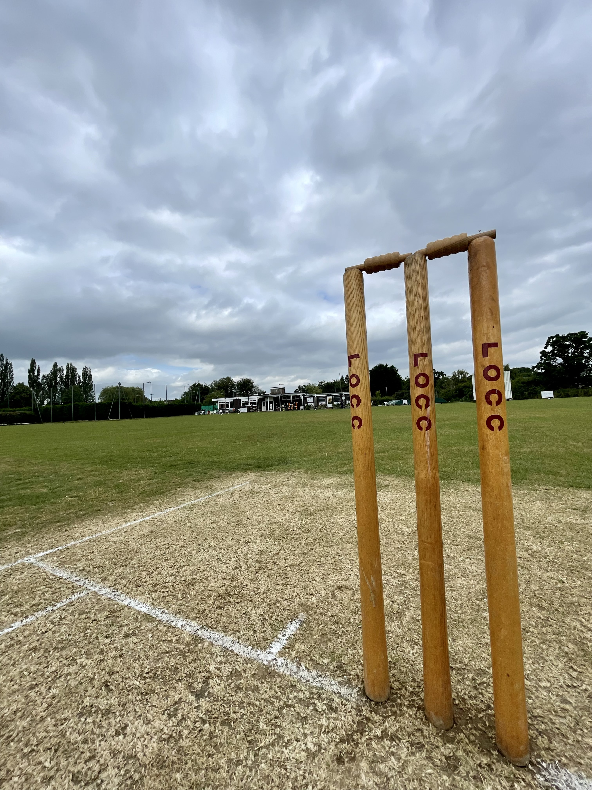

About Outwoods
Our club.
Loughborough Outwoods Cricket Club is a friendly, inclusive club based in Loughborough. We field competitive senior teams and welcome players of all experience levels. Our focus is simple: enjoy our cricket, support our teammates, and grow the game in our community.
More about Outwoods
The cricket
Saturday cricket in Loughborough.
We have two senior Saturday teams playing in the Leicestershire & Rutland Cricket League throughout the summer.
1st XISaturday cricket
2nd XISaturday cricket
LoughboroughLeicestershire
Around the club
Life at Outwoods
Match days, socials, the ground and the people who make the club what it is.
Gallery photo
Gallery photo
Gallery photo
Gallery photo
Gallery photo
Play for Outwoods
Fancy a game?
Drop us a message, come along and meet the club.
Get in touch